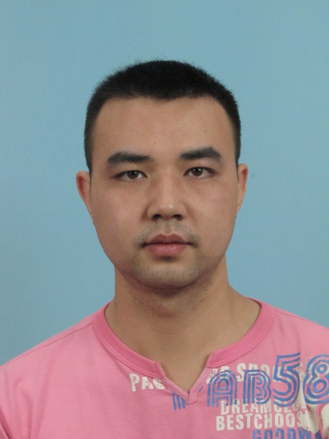
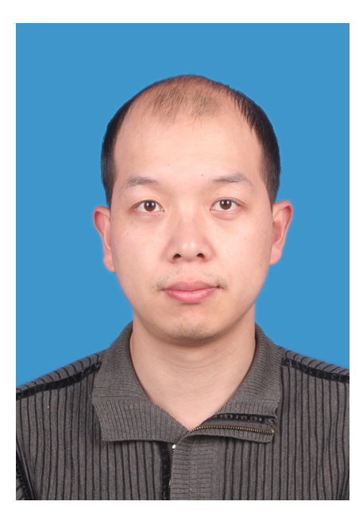

- Zhongyi Yan
-
Ph.D. Associate professor
10190143@vip.henu.edu.cn -
Zhongyi Yan received his Ph.D in Pathogenic biology between 2009 and 2016 in Zhengzhou University. He got his master degrees in bioengineering from 2005 to 2009 in Henan Agricultural University. He is interested in tumor immunology and dendritic cell targeting.
- Longxiang Xie
-
Ph.D. Associate professor
10190141@vip.henu.edu.cn - Longxiang Xie received his Ph.D in Microbiology between 2013 and 2017 in Southwest University. He got his master degree in biotechnology from 2007 to 2011 in Southwest Forestry University. He is interested in cancer and protein posttranslational modification.
- Yang An
-
Ph.D. Lecturer
10190113@vip.henu.edu.cn - An received her Ph.D. in biochemistry and molecular biology at China Agricultural University, followed by her bachelor degree in biotechnology at Northeast Agricultural University. She is interested in molecular biology of tumor, especially molecular subtyping. She is also working on using RNAi to study the function of oncogenes or anti-oncogenes in human cancer.
- Guosen Zhang
-

Ph.D. Postdoctor
Zhangguosen1989@126.com -
He received his Ph.D. in botany between 2011 and 2017 in Central China Normal University. He is studying on the biomarkers of tumor in early detection in lung Cancer.
- Qiang Wang
-

M.A. Lecturer
qiangwang@henu.edu.cn -
He received his M.A. in applied mathematics at Henan University. He is interested in data processing.
©2018, Medical Bioinformatics Institute.